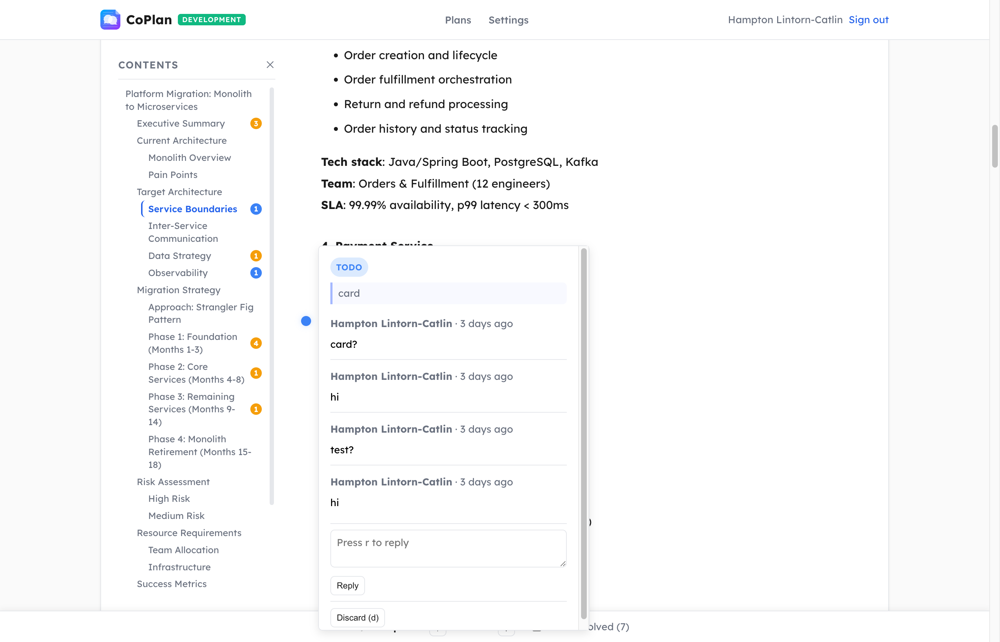
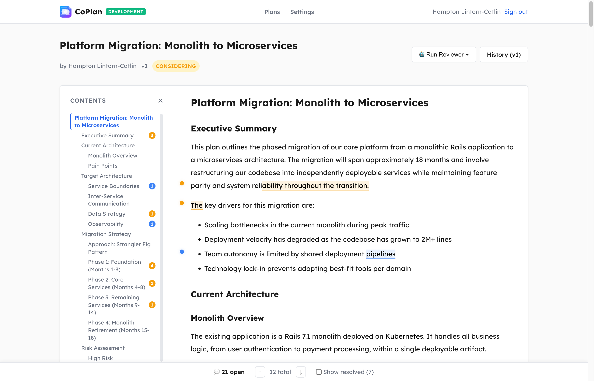
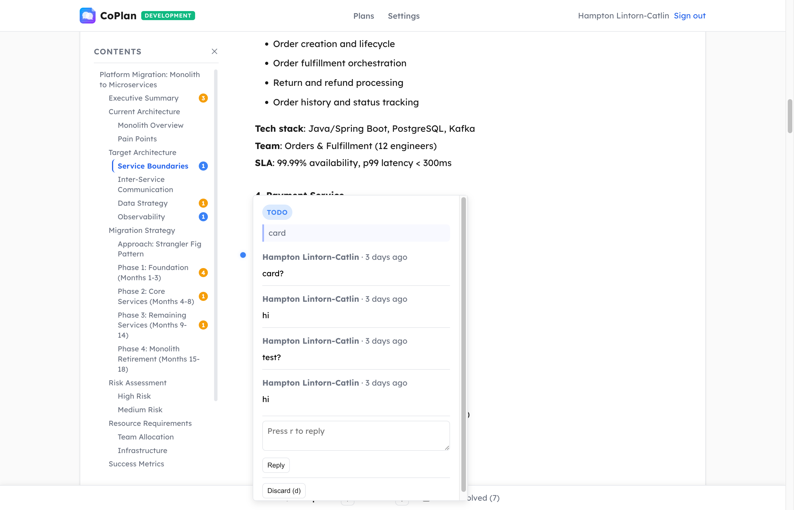
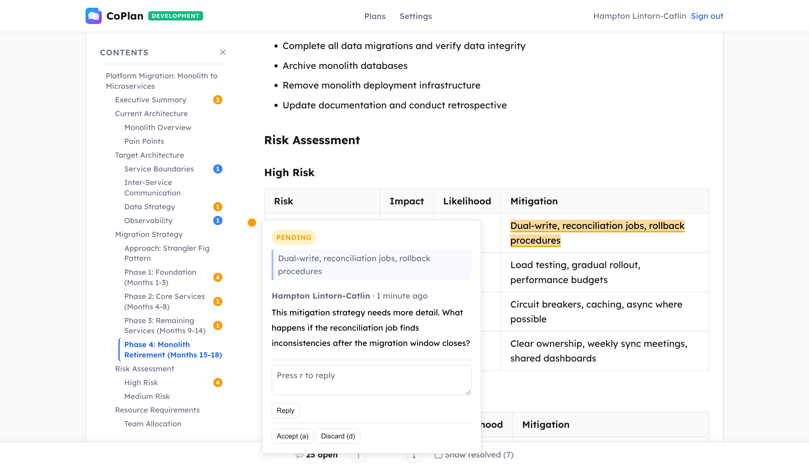
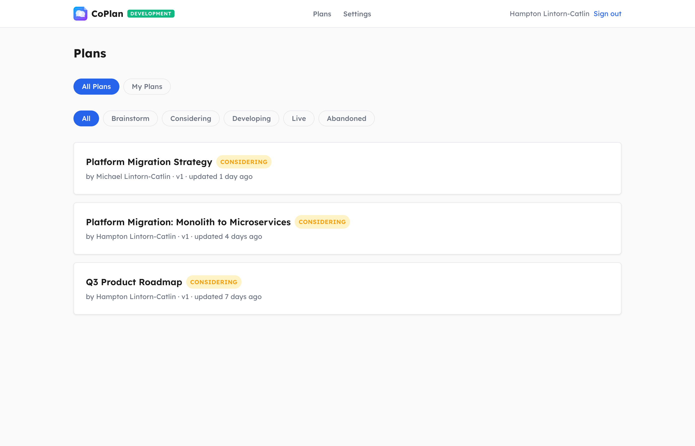
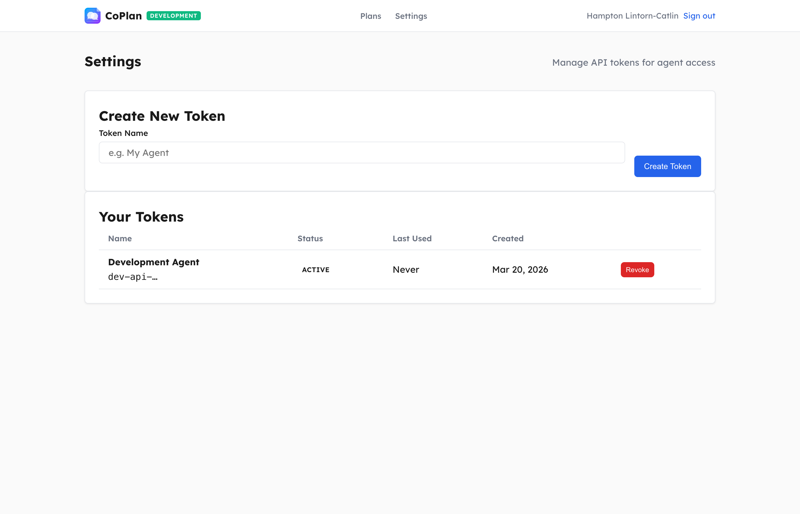

AI agents write and iterate on design docs. Humans steer with inline feedback. Every change is versioned with full provenance — so you always know who wrote what, and why.
View on GitHub →Six releases of features, from 0.1 to 1.0 — here's what shipped.
Select any text in a plan to leave feedback anchored to that exact passage. Comments appear as highlighted marks — amber for pending review, blue for accepted work items. Popovers show the full thread inline, no sidebar required.

A collapsible document outline that shows every heading in the plan with badge counts for open comment threads per section. Jump to any section instantly. Toggle with ].

Navigate between comment threads with j/k, accept with a, discard with d, reply with r. The bottom toolbar tracks open thread count and lets you toggle resolved threads. Feels like reviewing a PR.

Comments anchor to any content — including table cells, code blocks, bold/italic text, and list items. Highlights wrap correctly across formatted markdown and complex DOM structures. No content is off-limits for feedback.

Browse all plans across your organization with status filtering (brainstorm → considering → developing → live). See authorship, version count, and last activity at a glance. Filter by "My Plans" for your own work.

See who's viewing a plan right now with live presence indicators powered by ActionCable. No more "are you looking at this?" in Slack. Presence updates instantly as viewers come and go.
Generate personal access tokens for the REST API. Local AI agents interact with CoPlan via semantic operations — replace_exact, insert_under_heading, replace_section — with edit leases ensuring one agent edits at a time.

Full REST API with semantic editing operations. AI writes, humans steer.
From first commit to 1.0 — every milestone.
See who's viewing a plan live via ActionCable. Presence tracking updates instantly as collaborators open and close plans.
Share plan links in Slack and get rich previews with title, description, status, and author — no more mystery URLs.
Collapsible document outline sidebar with comment count badges per section and keyboard toggle.
AI-authored comments now show a distinct robot badge, making it clear which feedback came from agents vs humans.
New semantic operation for whole-section replacement with OT rebase verification. Agents can replace entire sections cleanly.
Color-coded favicons and badges per environment (development, staging, production) so you always know where you are.
Complete rebuild of the comment system: inline highlights, native popovers, margin dots, and the comment toolbar.
j/k to navigate threads, r to reply, a to accept, d to discard, Enter to submit. Full keyboard-first review workflow.
Amber highlights for pending feedback, blue for accepted todo items. Visual status at a glance across the entire document.
CoPlan extracted as a Rails engine gem (coplan-engine) — mount it in any Rails app with a single line in your Gemfile.
Full CRUD API for plans, versions, comments, and edit sessions. Token authentication and configurable auth hooks.
Real-time updates via Turbo Streams — token management, comment status changes, and plan edits broadcast live.